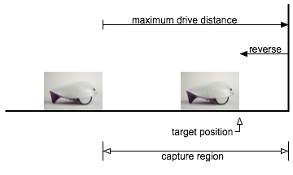

Exercise - Sensorless Parking¶
For this exercise, we will explore automatically driving a Finch robot into a known location in a corner without using any sensors. Hence the name, ‘sensorless parking.’
Driving Without Sensors¶
The Finch does have useful sensors, but they are limited. It cannot sense obstacles to the sides or rear, and cannot precisely measure distances. So in order to make the best use of the Finch, we can first explore how much we can accomplish without sensors at all. That way, we have a baseline for deciding whether adding code that uses sensor data improves the performance.
Let’s first consider driving into a corner. If the Finch is placed on a relatively smooth surface near a wall and starts driving forward, when it reaches the wall its wheels will begin to slip. If after a time, it briefly reverses direction, it will end up a short distance from the wall. It can then rotate until touch to align with the wall, then reverse until touch to park in a corner.
Try it out!¶
Before we go furthur in the discussion, let’s try this. We will be using Snap! to control the Finch for all these exercises; it’s a lot like Scratch, but includes additional programming features and is easier to use for sharing Finch code examples directly.
The example code can be loaded directly from the Snap server using this link. Please read the comment in the Snap sketch and try out the steps to see how your Finch robot physically performs. You’ll need to make sure it runs in Chrome, and you’ll need to make you have installed and launched the Chrome Finch Connection App.
Discussion¶
If you have followed the notes in the sketch, then you should have been able to see the whole sequence: forward, stall, reverse, rotate, stall, reverse, stall. If the robot started fairly close to a corner and pointed in the right general direction, it can end up neatly parked against the wall in the corner.
One big question: how close does the robot need to start for this to work? See if you can guess at the range of starting positions and angles which will work, and then try them out.
Terminology¶
There are two terms which will help us in future discussion: uncertainty and capture region.
Uncertainty is a term used to robotics to identify the amount and kind of error in the knowledge which a robot has about the world. In our example, the initial distance of the robot from the wall is uncertain - you can see it, but the robot has no way of knowing how far away it is.
The robot initially drives forward for a fixed duration. If robot is close enough to the wall to make contact during this motion, then when it backs up it will be close to the target position. This sequence can be said to reduce uncertainty.
However, if the robot is too far from the wall, then it won’t reliably reach the target because it will start to back up too soon. This position is said to be outside the capture region for the driving motion.
Challenges¶
- Can you change the parameters in the sketch to increase the size of the capture region?
- Can you find a different sequence which reliably parks the robot with the tail flat against the wall but without using a corner?
Garth Zeglin, Personal Robotics Lab, Carnegie Mellon University